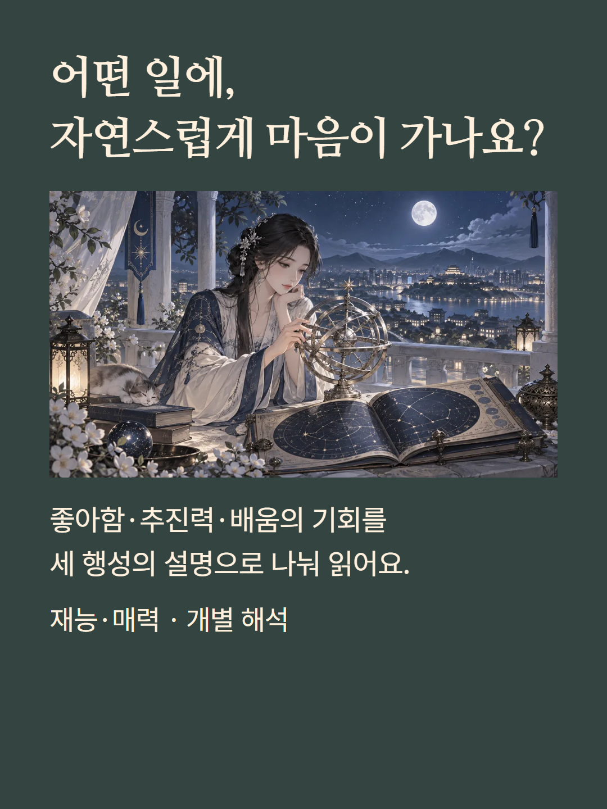
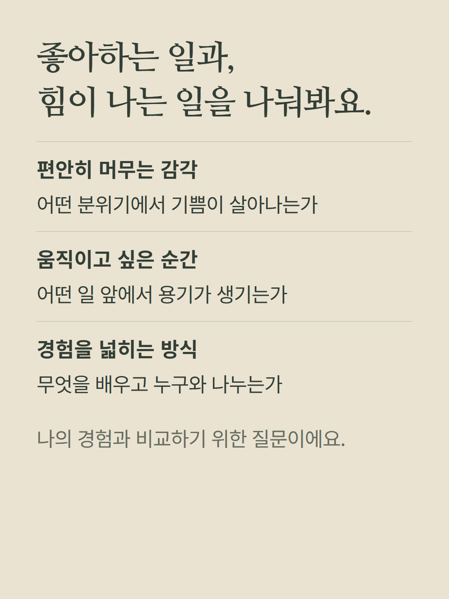
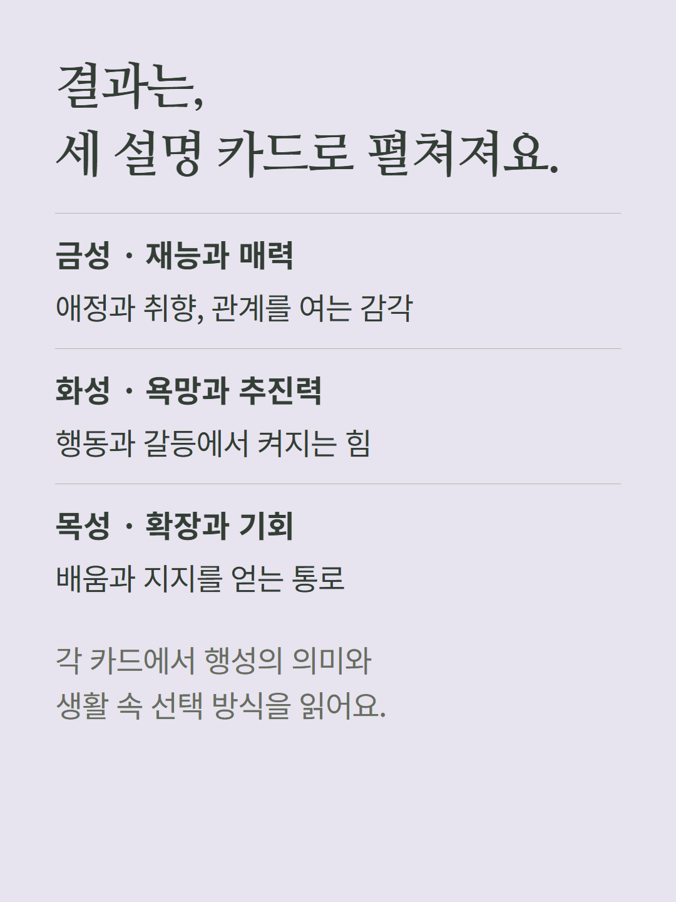
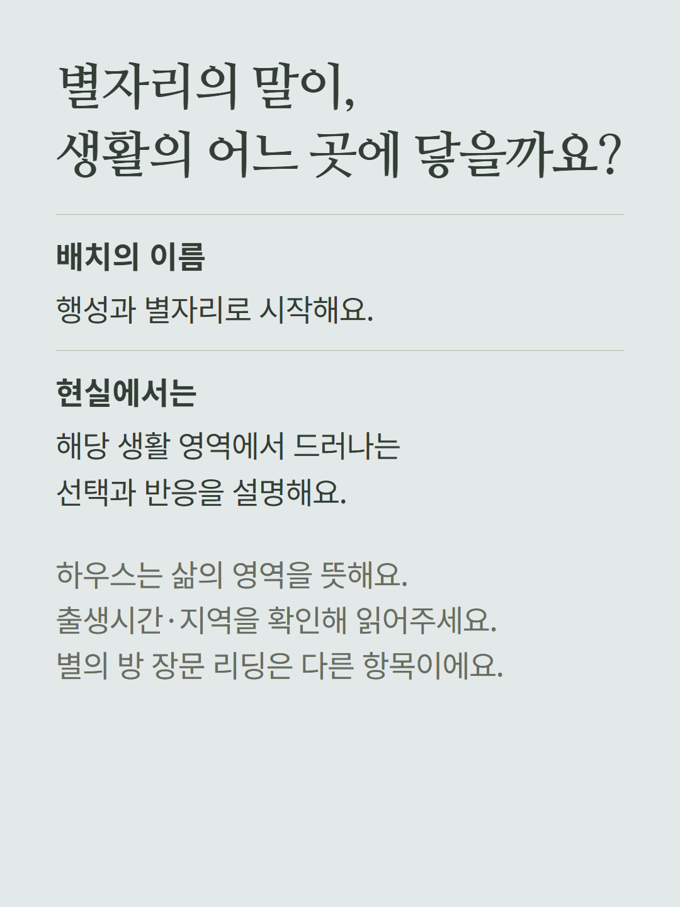
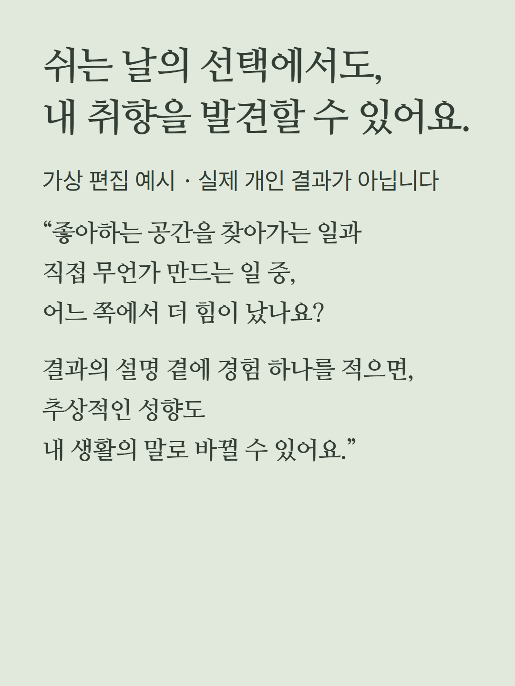
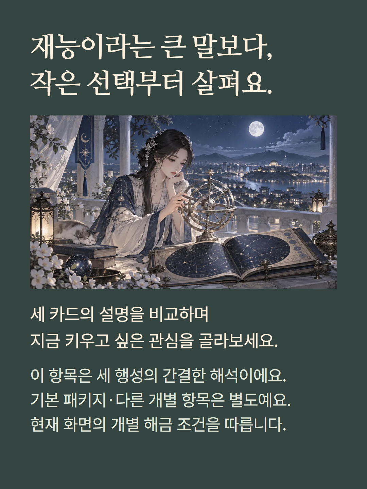

점성술 대체 결과 화면에 있는 재능·매력 개별 해금 항목입니다. 금성·화성·목성의 의미, 각 별자리와 생활 영역에서 나타나는 선택 방식을 세 설명 카드로 읽습니다. 정상 화면의 봉인된 별의 방 재능과 끌림과는 다른 항목입니다. 직업 추천 목록이나 아홉 문단 리딩, 실시간 AI 상담을 포함한다는 뜻은 아닙니다. 출생시간·지역이 하우스 해석에 영향을 줍니다. 예시는 가상 편집이며 기존 가격·해금 조건을 따릅니다.